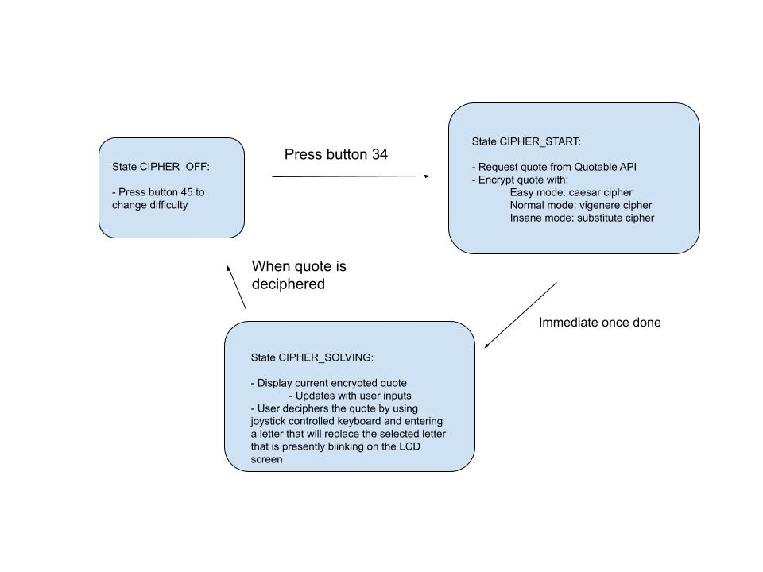
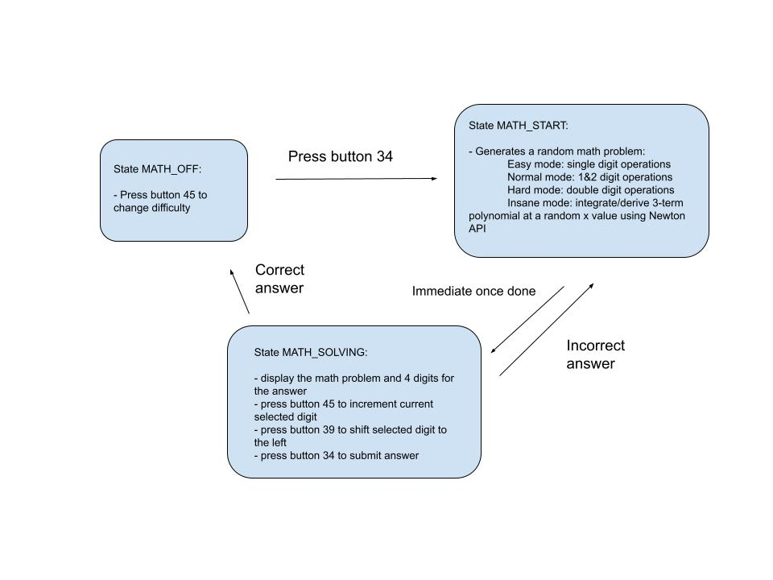

**Banana Clock**
Spring 2022 6.08 Final Project
The Banana Clock, savior of night owls and college students, is the amalgamation of all the features you did and did not want in a clock and alarm. While current alarms allow you to snooze to your heart’s content, the Banana clock requires you to complete a challenge (mental math, jumping, a cypher problem, or a maze) in a limited amount of time to deactivate your alarm. Never oversleep again!
Beyond these features, the Banana Clock conveniently displays the time, weather, temperature as well as lets you choose the music to accompany your alarm. It even has a sleek vehicular transportation appearance so it can run away from you before you smash it apart for waking you up. In addition to all of these awesome features, the Banana Clock is integrated with our web platform, so with your own Banana account, you can upload your game scores from waking up to your personal dashboard and see all of the cool statistics!
You might be so good at waking up you even land yourself onto our leaderboard! What are you waiting for? Try out the Banana Clock today!

Functionality
=======================================================================================
Clock appearance
-------------------------------------------------------------------------------
In the main display mode of the clock, there are a few options for how the time is displayed. Button 38 toggles between military time and 12-hour time. Button 45 toggles between two styles, one displays the seconds numerically and the other only indicates changing seconds with the blinking of the colon between the hour and minute numbers. In all styles of display, underneath the clock there are two small lines of text displaying the current local weather conditions and temperature in imperial units, which is updated every five minutes.
Settings Page
-------------------------------------------------------------------------------
### Settings Overview
By pressing button 34 from the home clock page, the user enters the settings interface, where they are taken through a series of setting selections.
Specifically, in the settings page a user can: 1) modify the alarm clock brightness for the remainder of the program, 2) change whether or not their data will go onto the leaderboard between users for all future games played in the current login section, 3) set alarms, 4) modify existing alarms, and 5) delete existing alarms.
A user can set up to five alarms total and each alarm consists of 1) the time to go off (using military time) and 2) the music option to play upon activating the alarm (stored as an integer).
After cycling through all these settings, the user can press Button34 to go back to the Clock interface.
### Detailed Settings Flow
After the user presses Button34, each setting is presented in sequence for the user to modify.
On the first page, the user can modify whether or not their future games will appear on the leaderboard by pressing Button39 to toggle the setting from “True” to “False”. This setting will persist until the user logs out or they change it again during the login session. Upon pressing Button38, the user sets the leaderboard setting and then goes to the next page of the settings.
On the second page, the user can modify the device brightness for the remainder of the time the program runs. Pressing the button cycles the LED brightness to intermediate brightness levels between full brightness to zero brightness. The brightness setting will persist for the remainder of the program run or until the next change. Upon pressing Button38, the user goes to the next page of the settings.
### Alarm Settings Flow
On the third page, the user goes into all their alarm settings. The user can add/delete/modify alarms. If the user has less than 5 alarms currently set, upon pressing Button45 the user can set a new alarm (see “Setting an Alarm” for more details). If the user has alarms currently set, upon pressing Button38 the user can modify an existing alarm (see “Modifying an Alarm” for more details), in which a user can either edit the time of an existing alarm or delete an existing alarm.
After choosing the hour and the minute for the alarm, the user then has the option to select the music. By pressing button 45, the user can switch between the music options, and the title they are currently hovering is displayed on the screen and the song is played. To select music, button 39 is pressed. The options for songs are: the ‘Game of Thrones’ theme song, the ‘Mario Bros’ theme Song, the ‘Harry Potter’ theme song, and the ‘Star Wars’ theme song. The melodies with the notes and length of each note were found on [arduino_songs](https://github.com/robsoncouto/arduino-songs)
Finally, pressing Button34 takes the user back to the clock, and pressing Button39 logs the user out.
Alarm Ringing
-------------------------------------------------------------------------------
At the time that the user has set, the alarm will ring by playing the music chosen when setting the alarm and “starting” the “car”, during this time there will also be an image of an alarm clock on the LCD screen of the Banana Clock. The user must chase after the car and press button 34 to stop the “car” from running further and to deactivate the alarm. From there, the LCD screen becomes a game menu, with all four possible game options on display: the maze, the math game, the cipher and the jumping game. To select which one of the games the user wants to play, they tilt the board until their chosen game is highlighted, and then confirm the selection with button 34. In this selection stage, the user has one minute to pick the game they want to play, otherwise they get sent back to the alarm ringing stage since the clock will assume they went back to sleep. With the exception of the cipher game, the user also only has one minute to win the game they selected or the alarm will start ringing. Due to the cipher game being a lot harder in nature, 10 minutes are given to the user to complete it before the alarm resumes ringing. The user can only return to the main clock state and permanently deactivate the alarm if they complete one of the games. The four games that can be played are as played as thus:
VIDEO
### Cipher
To start the cipher game, the user must first choose a difficulty. The difficulty increments with each press of button 45 and cycles through EASY, NORMAL, and INSANE. The user then must press button 34 to choose the current difficulty and actually start the game. An encrypted inspirational quote along with a keyboard will then be displayed. The first letter of the quote will be currently selected and will blink. To decipher the quote, the user must use the joystick keyboard the same way as they did with their login, and submit a string of ONE letter that they believe substitutes the currently selected letter. In EASY mode, the ESP32 will shift all letters by the same amount the substituted letter represents from the original quote, since this is a caesar shift, and display the new encrypted quote. In NORMAL mode, the ESP32 will shift all letters that have the same shift in the keyword of the vigenere cipher that was used in the encryption, and display the new encrypted quote. In INSANE mode, the ESP32 will only re-shift all instances of the original currently-selected letter to the new letter, and the new encrypted quote will be displayed. Take caution before choosing INSANE mode. The cipher is solved when the user successfully shifted all letters in the encrypted quote back to the original letters, so the quote is “deciphered.”
### Math
Similar to the cipher game, the math game also starts with choosing the difficulty level. The user chooses between modes EASY, NORMAL, HARD, and INSANE. When the game starts, a math problem will be displayed along with an answer field consisting of four 0-default digits. EASY, NORMAL, and HARD mode questions are arithmetic problems of increasing difficulty, with the numbers ranging from single digits to double digits. INSANE mode questions are derivation/integration questions of three term polynomials, which then the user has to solve for a final answer by substituting a random x value. Additionally, in this game mode, the user cannot brute-force answer; if a wrong answer is submitted, a new problem of the same difficulty level will be generated and displayed.
### Jumping
A simpler game that requires more physical exertion. The screen displays the number of fast up-and-down motions - a jump, if you will- that are detected by the IMU in the clock. The game is won when the clock has detected 10 jumps.
### Maze
A maze is displayed on the screen, with a pink square at the starting position. The user must tilt the entire clock to get the square moving, and the game is won when the ball passes through the entire maze and reaches the ending position at the red block. The square is unable to cross through the walls in the maze, and they have a minute to reach the red finish before the alarm starts ringing.
Server and Website
-------------------------------------------------------------------------------
In the login screen, the user can choose to login with their existing username and password or create an account. After a user has successfully logged in, they will see a leaderboard page with different tabs for the games they have played. Each tab has a left graph of overall rankings for all users (if they opt into sharing their data) and the right graph shows the user’s personal records for that game over time.
### Create account
The user is prompted to create a username and password. See [Create Account Website](http://608dev-2.net/sandbox/sc/team41/login/create_login.py)
Also check create_login.py for details about the html page.
 Create account
Create account
### Login
Once the user logs in, they are redirected to a page with their leaderboard info. Try this at [Login Wesbite](https://608dev-2.net/sandbox/sc/team41/login/login.py)
See login.py for details about the html page.
 Login
Login
### LeaderBoard Display
The user data is pulled from the leaderboard.db and displayed using Bokeh. One table features data sorted by game and another table features data sorted by user. These two tables are combined using row from Bokeh.
See two_tables.py for details about the html page. Note: if you create an account, there is nothing to display since you don't have game data yet.
 Leaderboard
Leaderboard
Databases and Applications
-------------------------------------------------------------------------------
There are three databases in our system. They are used to store a variety of data that helps personalize the Banana Clock for users.
* alarmtimes.db stores the table alarm_data with rows as (user text, alarm_time text, music int). It is used for storing data when the user logs in and out.
* leaderboard.db stores all the game data for all users in the table all_game_data with rows as (user text, date Datetime, game_name text, length float, on_leaderboard text). This is used for the leaderboard display on the website.
* userpassword.db contains all the login information for all users with a table user_pw_data with rows (user text, password text. This is used by the esp login and website login.
Full System Diagram
=======================================================================================
 Overall Wiring Diagram of the Hardware System
Overall Wiring Diagram of the Hardware System
Hardware
=======================================================================================
Wiring Diagram
-------------------------------------------------------------------------------
Here is the overall wiring diagram of our system. The ESP is the center of our system, as it runs our code, takes in data from the sensors, and outputs data to the actuators. The red wires show when high voltage is being transferred, the black wires represent ground, and the green wires represent data transfer from the ESP to the module and vice versa.
Laser Cutting the Chassis
-------------------------------------------------------------------------------
To build the chassis, our team decided to laser cut a piece of acrylic and then build the acrylic. To create the dxf file, our team used Adobe Illustrator. We referenced the datasheet for the motors at [DC Motors](https://www.amazon.com/gp/product/B07XMFLSPB/ref=ppx_yo_dt_b_asin_title_o06_s00?ie=UTF8&psc=1) to get the dimensions of the motors and create the correct cutouts for the motors. Here is the dxf image.
 dxf Image for Laser Cutting the Chassis
dxf Image for Laser Cutting the Chassis
The large red square is the entire chassis. The four ovals with dots on the corners are the motor cutouts, and the actual dots are screw holes for M2 screws. The blue lines are engravings, marking where the chassis will be bent. After laser cutting the acrylic piece, we used a heat gun to heat the engraving area. Once the acrylic was hot enough, we bent the piece 90 degrees.
Assembling the Car
-------------------------------------------------------------------------------
The first step of building the car was getting the motors soldered, which we did in Edgerton.
 Wires Soldered to the Motors
Wires Soldered to the Motors
The next step was to attach the motors to the chassis, which we did by inserting the motors into the chassis cutouts and then using M2 screws to secure the motors.
 Motor Attached to the Chassis with M2 Screws
Motor Attached to the Chassis with M2 Screws
Next, we placed the shaft to hex wheel coupler on each shaft, placed the wheel on each coupler, and then screwed the wheels to the couplers using M4 screws. Once we got the motors, couplers, and wheels mounted, the rest of the hardware was placed on top of the board using velcro strips.
 Velcro Strip Cutouts
Velcro Strip Cutouts
Finally, the rest of the hardware pieces were mounted on top of the chassis using the velcro strips, and they were wired together according to the wiring diagram in section 3.1.
 Final Car Build
Final Car Build
Parts list
-------------------------------------------------------------------------------
* [DC Motor](https://www.amazon.com/gp/product/B07XMFLSPB/ref=ppx_yo_dt_b_asin_title_o06_s00?ie=UTF8&psc=1) (4)
Used to make the system car move
* [6mm Shaft to Hex Wheel Coupler](https://www.amazon.com/Flexible-Coupling-Coupler-Connector-Wheels/dp/B07QNHQGZB/ref=sr_1_23?crid=16YULHGEHXSYZ&keywords=6mm+bore%2C+12mm+hex+wheel+mount+shaft&qid=1650246720&s=industrial&sprefix=6mm+shaft+hex+wheel%2Cindustrial%2C55&sr=1-23) (4)
Used to attach the motors to the wheels
* [Hex Wheel](https://www.amazon.com/Wheels-Rubber-Tires-Hight-Touring/dp/B09K5FX2F6/ref=sr_1_60_sspa?keywords=12mm+hex+wheels&qid=1650244910&sr=8-60-spons&psc=1&spLa=ZW5jcnlwdGVkUXVhbGlmaWVyPUFUQ1NDVENST1g0N0MmZW5jcnlwdGVkSWQ9QTA2MTQ1NzMxOUpUUDVFV0c3RjJMJmVuY3J5cHRlZEFkSWQ9QTA1ODg3NTQxRDRWMjRUMExGRDU2JndpZGdldE5hbWU9c3BfYnRmJmFjdGlvbj1jbGlja1JlZGlyZWN0JmRvTm90TG9nQ2xpY2s9dHJ1ZQ==) (4)
Used as wheels so the system can roll
* M2 Screws (16): Used to attach the motors to the chassis
* M4 Screws (4): Used to attach the wheels to the coupler
* 11x10in. Acrylic Board: Used as the chassis
* [Siren](https://www.zoro.com/speco-technologies-weatherproof-alarm-siren-4h-black-sa4p/i/G4576988/?utm_source=google&utm_medium=surfaces&utm_campaign=shopping%20feed&utm_content=free%20google%20shopping%20clicks&gclid=Cj0KCQjwmuiTBhDoARIsAPiv6L9DB5ocNFhxUZzeh8PnW3mrSbbd_zwecgwkqgFx8CR0x68-BelIAHYaArMOEALw_wcB): Very loud siren that does not play music
* [2-Axis Joystick](https://www.parallax.com/product/2-axis-joystick/): Used to control the keyboard
* [Motor Driver](https://www.amazon.com/dp/B01M29YK5U/ref=pe_386300_442618370_TE_dp_i1) (2): H-bridge to drive the motors
* [Speaker](https://www.amazon.com/CQRobot-Speaker-Interface-Electronic-Projects/dp/B0822YL2L2/ref=sr_1_6?crid=VX9R9CG0WI48&keywords=arduino%2Bspeaker&qid=1650136310&s=electronics&sprefix=arduino%2Bspeaker%2Celectronics%2C60&sr=1-6&th=1) (2): Plays the music for the alarm after the siren goes off
* 5V Portable Battery Charger: Powers the Arduino board
* AA Battery (8): Powers the motors
* 12V AA Battery Pack: Combines the AA batteries in series
* [PAM8302A Audio Amplifier](https://www.adafruit.com/product/2130): Allows the Arduino to control the speakers with more power
Design Challenges and Decisions
=======================================================================================
Newton API
-------------------------------------------------------------------------------
The math game that can be played after an alarm utilizes the Newton API. However, we were struggling to connect the ESP32 to the API at first due some redirection issues that were extremely difficult to debug. We overcame this challenge by writing a Python server-side script that can make requests to the API, and having the ESP32 make a request to this Python script instead.
Integration
-------------------------------------------------------------------------------
Because our project is very modular, we all worked fairly independently for the first two weeks. Unfortunately during this we did not communicate very well on the exact specifications of our respective parts, which made integration difficult. However, we spent a lot of time working together in the last two weeks of the project and as a team we worked through all of the integration issues and improved our communication skills.
Button Errors
-------------------------------------------------------------------------------
Due to several parts of the code relying on the same four buttons, as the program became more developed we encountered issues around some buttons becoming unresponsive. Our buttons became more responsive after we minimized each button update frequency such that most of the code was only relying on buttons being updated at each loop() iteration.
Alarm Storage
-------------------------------------------------------------------------------
Alarms are stored as strings in the settings page and the user can set up to 5 total alarms.
In settings.ino, there exists the array char *setting_alarms[maxAlarmNums] = {alarm1Time, alarm2Time, alarm3Time, alarm4Time, alarm5Time};
Which stores pointers to five character arrays:
~~~~~~~~~~~~~~~~~~~~~~~~~~~~~~~~~~~ C
char alarm1Time[8];
char alarm2Time[8];
char alarm3Time[8];
char alarm4Time[8];
char alarm5Time[8];
~~~~~~~~~~~~~~~~~~~~~~~~~~~~~~~~~~~
Each of which stores the time for the corresponding alarm, if set.
In addition there exists the array int music_options[maxAlarmNums], which stores the music option for each array, or -1 if the alarm does not exist.
Non-blocking Songs
-------------------------------------------------------------------------------
It took a few tries and restructurings to manage to make playing the songs fully without blocking. Initially, the songs were being played with a for loop that iterates through all the notes and ran the ‘delay()’ function with the note length of the current note in the loop. Every iteration of the loop an if statement was used to check if a button had been pressed and the song should be interrupted. However, this caused the issue that if the entire button press happened within a note, the song would not stop. Then, to try to make the function non blocking and solve the issue, I created my own delay function, that would use a while loop to check if the passed in time had gone by, but that would break out of the loop when a button was pressed, solving the previous problem.
Nevertheless, I then found out that this solution was still blocking, when we tried to make the car move while playing a song at the same time. To finally fix it, I restructured the music file and how all songs are called. A variable called ‘currNoteIndex’ keeps track of the index in the array of the current note that should be playing, which also reveals the amount of time we should stay in that note. Then, a timer called ‘musicTiming’ is used to keep track of how long has passed, and when the length of the note passes the currNoteIndex is incremented and the timer is reset. This finally made the songs completely non blocking and able to operate with the car running.
~~~~~~~~~~~~~~~~~~~~~~~~~~~~~~~~~~~ C
void starWars()
{
int noteLen = abs(noteStar / melodyStar[currNoteIndex + 1]);
if (melodyStar[currNoteIndex + 1] < 0) {
noteLen *= 1.5;
}
if (millis() - musicTiming > noteLen){
currNoteIndex += 2;
if (currNoteIndex >= sizeStar){
currNoteIndex = 0;
}
ledcWriteTone(AUDIO_PWM, melodyStar[currNoteIndex]);
musicTiming = millis();
} else if (currNoteIndex == 0){
ledcWriteTone(AUDIO_PWM, melodyStar[currNoteIndex]);
}
}
~~~~~~~~~~~~~~~~~~~~~~~~~~~~~~~~~~~
Detailed Code Layout
=======================================================================================
Main Loop
-------------------------------------------------------------------------------
 Main loop
Main loop
The main loop keeps track of the current state of the program interface by tracking the value of the variable ‘mainState’.
When the program begins, the user is prompted to login using the joystick to enter their username. After entering their username, the current alarms for a user are requested from the database via a GET request and the user is taken to the clock page.
In the clock page, the current time is displayed. The default setting is to display the time in standard time as well as the hours and minutes. Selecting Button38 switches to showing the time in military time from standard time and vice versa and selecting Button45 displays the hours, minutes, seconds instead of hours and minutes and vice versa. Selecting Button34 from this page takes you to the user settings page. In addition, if the time ever becomes equal to a set time of an active alarm, the alarm goes off, taking you to the game choosing page.
If the user enters the settings page and logs out, the program takes you back to the login screen. If the user simply exits the settings page, the program goes back to the clock page.
Clock Display + Keeping track of time
-------------------------------------------------------------------------------
For the clock and for keeping track of time, we used some of the code from the first design exercise. The clock has 3 state machines for toggling seconds mode, toggling military time mode, and toggling automatic turning off. Three different buttons were each assigned to toggle a separate state machine. Every 60000 milliseconds, we sent a GET request to the time api to calibrate the internal clock. Every 1000 milliseconds, we manually updated the internal time. Every 300000 milliseconds, we also request the clock’s location using the Wifi geolocating method and use the location to send a request to OpenWeather API for the current location’s weather data. The clock parses the data for the weather conditions and temperature and displays that below the time in every time-displaying state.
GameChooser Class
-------------------------------------------------------------------------------
This class is responsible for ringing the alarm when the time of a set alarm is reached and allowing the user to select and play the game they choose to deactivate it. Two functions are present in this class: the ‘void alarmRinging()’ function which sets what is needed for an alarm to ring, and ‘void update(float angle, int button, bool alarm)’. The alarmRinging() function simply sets up the car, prepares variables for playing a song and sets the tft background. The update function is where all of the decisions for deactivating the alarm and picking games are made.
State = 1
The first state of update (the state is an instance variable of the class) iterates while the alarm is ringing. In that state, there is an if statement to check if the button is pressed to deactivate the alarm, and if not playmusic() and loop_car() are called since that means the alarm is still ringing. When the alarm is deactivated, the car is stopped, the game options are displayed, the game_timer is reset and the state changes to state = 2
State = 2
In this state, the game selection happens. By tilting the board using the IMU, the user scrolls through the options due to the if statements comparing the IMU angle to the angle_threshold, which results in the game_index being moved. When button 34 is pressed, the game is confirmed and the next state is decided based on the game that corresponds to the chosen game_index.
State = 3, 4, 6, and 7
The math game is played in state 3, jump in state 4, cipher in state 6 and maze in state 7. The game gets repeatedly called within the state until the player wins (the game function returns something other than -1). There is also a timer in each state making sure that the player isn’t in that state for over a minute (with the exception of the cipher). When the game is won, the state changes to 5.
State = 5
Congratulates the player and says good morning. Then, it calculates how long the player spent playing the game they chose, and then posts data to the server about the game through the function postWinning(), which posts the username, whether the game should be displayed on the leaderboard, the game name (what game the player chose to play) and how long they spent playing. Then the main clock is setup and the main loop returns to the clock display.
Login Functions
-------------------------------------------------------------------------------
The login function’s main job is to get input from the user and then check if the input username is a valid username. The login function uses a keyboard, which was programmed to have a cursor controlled by the joystick, and a button would select keys on the keyboard to type. Then when the user presses the submit button, the login module reads the username that the user types, sends a GET request to the Python server, and then receives the response from the server. If the response indicates that the login was successful, the login module saves the types username as the global username, and it returns a 1 to indicate to the main src file that the login succeeded. If instead the login was unsuccessful, a prompt is shown saying that the login failed and that the user needs to try again. The login continues to run this loop, checking if the user submitted keyboard input.
Maze functions
-------------------------------------------------------------------------------
The mazeDesign is an array of integers that is used as the map that will be displayed for the maze. This map is shown in the tft through the setupMaze function, which loops through all of the coordinates in the map (20 by 16) and draws them using the ‘drawAtCord’ function. This function draws a black square if the corresponding map value is 0, a white one if it is 1, and a red one if 2 (for the finish line). The drawPlayer function is used to draw and erase the player as it moves.
The loopMaze() function has 4 if statements comparing the x and y angles in the IMU to angle thresholds and moving the current location of the player accordingly. The past location of the player is used to erase from the tft the drawing where the player used to be. In addition, the player is only able to move in a direction if it is not going to collide with a wall (it uses the coordinate() function to check which map location its edges correspond to). The function returns a -1 while the game is running and a 0 when the player wins when they reach the red square.
Music Functions
-------------------------------------------------------------------------------
For each one of the songs, there is a melody integer array that stores their notes and corresponding lengths. The songs also have different tempos that they use, which are used to calculate the length of a whole note. Then, using a current note index and a timer musicTiming, the song is played while its loop function is called.
Cipher FSM
-------------------------------------------------------------------------------

Cipher FSM
Math FSM
-------------------------------------------------------------------------------

Math FSM
Car Functions
-------------------------------------------------------------------------------
The car works as a state machine, with state 0 representing going straight and state 1 representing turning. To actually make the car go straight, the motor driver that controls the left side of the car is sent HIGH signals on inputs IN1 and IN3 and LOW signals on inputs IN2 and IN4. The motor driver that controls the right side of the car is sent LOW signals on inputs IN1 and IN3 and HIGH signals on inputs IN2 and IN4. The car stays in this state 0 for 3000 milliseconds until it turns by sending LOW signals to inputs IN1 and IN3 and HIGH signals to inputs IN2 and IN4 and transitioning to state 1. The car keeps turning while in state 1 for 2900 milliseconds until it straightens by “resetting” the left motor driver by sending HIGH signals to inputs IN1 and IN3 and LOW signals to inputs IN2 and IN4. This repeats until the stop function is called, in which LOW signals are sent to all of the inputs.
Setting Functions
-------------------------------------------------------------------------------
### Brightness
The program starts out at full brightness. As one presses button 39 the brightness decreases by 10% of the brightness duty cycle range, until one reaches 0 lighting and then it cycles back to full brightness. The code for this portion was based on the code from Lab03a: PWM.
### User Login and Logout
If a user is not logged in, bananaClock prompts them to login before going to the main clock screen. After a user logs in, the program makes a GET request to the alarmtimes database to get all alarms a user may have from their most previous login session.
The program parses the GET response for each individual alarm time and the saved music option for that alarm.
If a user modifies their alarms after logging in, these modifications are saved locally, and upon logging out the most current alarms for the user are sent to the alarm times database in a POST request.
Each user is uniquely identified using their username, entered upon logging in. See the section of the report on databases for more information about this on the database side.
### Setting an Alarm Time
To set an alarm, one uses IMU tilting to cycle between 0-23 for the hour (and then press Button39 to confirm the hour), then cycles between 0-59 for the minute (and then press Button39 to confirm the minute), and then cycle between all music options (and then press Button39 to confirm the music option).
After setting an alarm, one goes back to the main settings alarm page.
### Modifying Alarm Settings Page
In the modification page, one can cycle between the integer ID of all the currently-set alarms by pressing Button39. Pressing Button45 deletes the alarm at the currentID and pressing button34 edits the time and music of the alarm at the current ID (using the same process as described above for “Setting an Alarm”).
Server Side
-------------------------------------------------------------------------------
After the user sets alarms as previously explained and logs out of their account, alarm specifications including username, alarm times (list), and alarm music (list) will be sent to the alarmtimes.db using a POST request. In the request file called save_alarms.py on the server, any existing alarm and music data for the user is removed from the table. We parse through the posted alarm and music lists and save them into a SQL table alarm_data (created if it does not already exist).
When the user logs into their account, any stored alarms from alarmtimes.db gets pulled from the server with a GET request and stored locally for usage. The request file get_alarms.py selects alarm and corresponding values for a given user and outputs a dictionary of this form:
{"doc": {"alarm_time": {"a0": "", "a1": "", "a2": "", "a3": "", "a4": ""}, "music":{"m0": -1, "m1": -1, "m2": -1, "m3": -1, "m4": -1}}}
If the user does not have five alarms, the dictionary has a corresponding empty string in “alarm_time” and -1 in “music.”
Weekly Demo and Milestone Videos
=======================================================================================
* [Keyboard](https://drive.google.com/drive/folders/1GJnQlhoqaQKALqVgch84DDMolcPjRS7L?usp=sharing)
* [Server](https://drive.google.com/drive/folders/1-lzl_fZn6fD-LUJ37UK7kDPZLmszs5gD?usp=sharing)
* [Games](https://drive.google.com/drive/folders/11tr1invD09g_XWTOc1UYtOi0rlUg1lz1?usp=sharing)
* [Login](https://drive.google.com/drive/folders/1OxlcbLR_9MpWPq63l-HF46vZlwb-pqqK?usp=sharing)
* [Music](https://drive.google.com/drive/folders/1PLpJqBe7m_Ab9AVIjKedZXxjRe1QEOKr?usp=sharing)
* [Car](https://drive.google.com/drive/folders/1hMv-7wj3oLbKKpWkVO6LDc1Xtjxq7tf6?usp=sharing)
* [Integration](https://drive.google.com/drive/folders/15kcMw_gVRBr2Iu5w76KGElTHktdyuNrB?usp=sharing)
* [Alarm](https://drive.google.com/drive/folders/14Rkrdftt5xthLtuFblOPrp_C94JESQKo?usp=sharing)
Team Members
=======================================================================================
* Caroline Cunningham
* Karen Liberman
* Evan Seeyave
* Jessica Wu
* Kristine Zheng